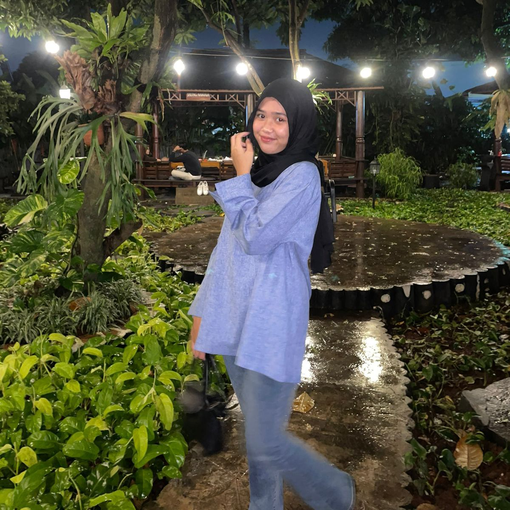

2dolist adalah aplikasi yang membantu pengguna mengatur dan melacak daftar tugas yang perlu dilakukan.
Dengan aplikasi ini, pengguna dapat menambahkan, mengedit, menandai selesai, dan menghapus tugas
dari daftar mereka. Ini sangat berguna untuk mengatur waktu dan prioritas.
ProdukHalooo semuanya
Sebelumnya kami mengucapkan terimakasih telah melihat produk yang telah kami ciptakan
Berikut adalah portofolio anggota kelompok informatika kelas XF :
1. script writer
Nama: Khansa Zaskia Azzahra (17)
Tempat/ Tanggal Lahir: Jakarta/ 13-01-2008
Hobi: jajan dan makan
Visi: bekerja keras
Misi: Bekerja hingga menjadi orang kaya
Moto Hidup: Yang rajin mandi kalah menariknya
sama yang rajin senyum
2. programmer
Nama: Putri Sekar Hanum (29)
Tempat/ Tanggal Lahir: Jakarta/ 03-07-2006
Hobi: Mendengar musik, bernyanyi
Visi: menjadi penyanyi
Misi: melatih suara hingga menjadi penyanyi
Moto Hidup: Be good, be smart, be gorgeous
3. design graphic
Nama: Rayhan Ardhani
Tempat/ Tanggal Lahir: Jakarta/ 23-05-2007
Hobi: Bermain Futsal
Visi: Menjadi pribadi yang lebih baik
Misi: Menjadi pemain futsal terkenal
Moto Hidup: hidup tak selalu berlari,
berjlan saja sudah sampai
4. copy writer
Nama: Muhammad Hafidz
Tempat/ Tanggal Lahir: 27-01-2008
Hobi: scrolling tiktok
Visi: Foya
Misi: Foya
Moto Hidup: Foya Foya
Jika ada salah mohon dimaafkan,
jika ada yang suka tolong di ungkapkan